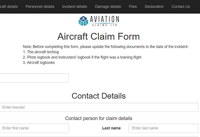

Compared to the 15 other papers I had taken during the BIT, Software Engineering was like entering some strange twightlight zone. On the one hand it was filled with scary and unfamiliar teaching methods, but on the other it also came with a familiar and reassuring soundtrack. I mean who doesn't like John Fogerty and Supertramp?
Day one and we were into it: Form a group, develop some software. My jaw was on the floor at the fast pace of it. I was left wondering what had happened to my rote learning Power Point paradise. The one where you could go quietly through the motions, little to no brain required, then cram like no-one was watching, and still walk away with an A. Not this time! This was instantly engaging and there was work to be done.
I made a suggestion to use C# for the spinner project simply because everyone in the group had done the programming 2 paper so had experience with it. After some research it quickly became apparent that there was a better way. I found a great example using HTML. This was a good learning point for me. I needed to be open to, and embrace other ways, languages and methods. Even if I wasn't familiar with them. I ended up putting this very notion into practice during the project.
During the first few weeks we also learnt about various frameworks and methodologies. These would help us by providing structure to the madness that software engineering can be. We learnt how to increase our professional proficiency by using tools such as GIT, Slack, Trello. We also looked at Agile and were introduced to sprints and scrumming. We began to employ these tools into our spinner project and for me it was a relief to have that structure around the process. I found Kanban very effective in particular for providing a great overall view of the project.
The spinner was taking shape nicely and we spent a lot of time as a group working on our code in class. Initially I found this very difficult. I have never rated myself as a coder, to the point of being a little self conscious about my ability or lack thereof. I had always preferred to work away quietly by myself. But after initially just watching, it was obvious that having creative input from many people really enhanced the project. Bouncing ideas off each other, or building on someone’s suggestion made for an improved overall product. Another benefit I saw was having more than one set of eyes for picking up syntax errors. The number of times you would be staring at code for ages wondering why it wasn't working, then someone finds the issue straight away. I can now see the value of group coding.
Week three already and we presented our spinner. During the whole build I was freaking out because I had found and copied basically the entire spinner code. I assumed that we were supposed to build it from scratch so I was extremely relieved when Adon mentioned that copy + paste was OK. Adon also delivered an education power point that day, and a couple of things stood out for me. Firstly the suggestion that the Polytech wants programs to fit into a bell curve, and that they aren’t challenging enough if they don’t and too many people achieve highly. My belief is that the Polytech should set programs based on what skillset a graduate needs to enter the workforce in their chosen field. If that is attainable by all the students, so be it. The other thing I found interesting was looking at the education system and self-teaching ideas. The software engineering paper is largely self-driven. Initially I found this completely over whelming. However after initial panic at the realisation that I wasn’t going to be spoon fed, I began to enjoy it, and it was refreshing to hear ideas like “you don’t need to know everything” because there are so many resources available these days. This was a major change for me as I had always thought the goal was knowledge retention. The only concern I had with the self-driven method was that you might do something that isn’t best practice, and I would have benefitted from more guidance in this area. I think more emphasis on best practice would have complimented the self-driven method nicely, especially because when you are under pressure trying to produce code, it can be easy to forget about the need to follow best practices.
The Project

I was part of the Aviation Claims Ltd project. The task was to convert their paper based systems into an online platform. Our team was largely made up of the same people from the mini project so already knowing each other made things easier from the start. That combined with the practice run of the mini project left me feeling confident of the task ahead.
We discussed the technology we would use; HTML for the claim forms, with PHP, and a database for the back end. The client, Derek, wanted his forms to be responsive and Elise suggested we use Bootstrap. I had never heard of it, but with my newly found “embrace new concepts” mantra on board, I was keen. I started researching Bootstrap and began with this tutorial on Lynda. We had our first meeting with Derek and he outlined his grand vision for the aviation insurance industry. We narrowed the scope and agreed that we would concentrate only on the claims handling. The meeting lasted for three hours which was probably twice as long as it needed to be. It was frustrating at times as we seemed to go over the same things multiple times. I guess we could have steered the meeting a little better.
We set up the tools to help us manage the project. We started a Kanban board on Trello. We went a bit crazy and threw tons of tasks up there, which were then assigned to group members. I initially used this a lot by, as well as helping to manage the board by updating task statuses, also creating new ones as the project developed, and reminding the team that if they had nothing to do to check the Kanban for work. However once I knew what part of the project I'd being working on, I didn't really use it at all. I had a pretty good idea of what I needed to be doing. I could have used it better by taking my own advice and checking in a bit more often than I did at the end because I did overlook a couple of tasks. A screenshot of our Kanban board can be found on the links & resources page.
I made up a demo Bootstrap form example and we used that to convert all the paper forms to HTML. We split into two groups, three of us on form conversion, and two looking at a likely database layout. Our form conversion strategy turned out to be a mistake. The demo was really only a couple of form fields so the majority of conversion was open to individual interpretation. This resulted in each form being different which is not what we wanted. In hindsight we should have constructed an entire form as a group, agreed upon all design aspects, and only then made the other forms.
We were asked to create our milestones and as a group we thought we had so much time to cover everything. So much that we would be all wrapped up by the end of October. But as we broke the project into smaller pieces, we realised just how complicated it was. Needless to say the timelines and deadlines were slowly but surely creeping out and being missed. Not helping was that we were only meeting at the scheduled class times. Sometimes people couldn’t make it, and at scheduled class times sometimes you had to do other things. Like present our milestones. Initially I thought this was a waste of time. After an hour or so watching all the groups present, I still felt the same. We relied on having this time to meet, discuss, write code, and move foward as a team, and we had already shown our milestones a week earlier. I think not being able to meet as a group often enough had an effect on us. Slack is good, but I think physically meeting more often would have kept us moving forward at a faster pace.
When we did meet we would hold a scrum, or a less formal version of one (no scrum master etc), and generally these worked really well. As a group we noted any questions for Derek, solved any technical problems, and looked at what we needed to do next. I always left feeling as though they were worthwhile and that they kept everyone moving in the right direction.
As far as thinking about our project adhering to the Agile philosiphy, I guess we did to a certain extent. At the beginning we were producing examples early and often for Derek to provide feedback. We didn't just dictate the design. We were concious of the need to include him and to think of the processes he would use in his business. We did face changing requirements often as we developed the project, and many times after consultation with Derek we would need to find an improved way to handle form data. For example, combining multiple fields into a pick lists, or the adding of the clone code to handle duplicate form elements such as multiple insurers, passengers or witnesses. I think those two aspects of Agile have merit. Producing code early seems good, as long as it works OK!, and welcoming changing requirements is a no brainer after all, you should always want the best possible product for the client. Here is a copy of our Q & A with Derek .
I spent the bulk of the project working on the Bootstrap. Although the Bootstrap was never fully finished. When this was at a stage where it was ready for database intergration I asked the group to show me how the PHP worked and teach me how to write some of the modals and form controllers. blah blah something something
Overall I have felt the full range emotions during my software engineering experience. At times I have felt frustrated, overwhelmed, challenged, and disappointed that we couldn't produce a working product for our client. That said, I have also had a lot of fun with the group, felt satisfied with what I have produced, and that ultimately I'm better off for the experience. I feel I have definitely learnt a lot during this journey, which seems ironic because of its largely self driven nature. But I think as well learning the Software Engineering frameworks here, you tend to learn a lot of intangible things too, like dealing with the group dynamics, interpersonal relations, and about your own strengths, weaknesses and how you could personally improve which is all valuable stuff.